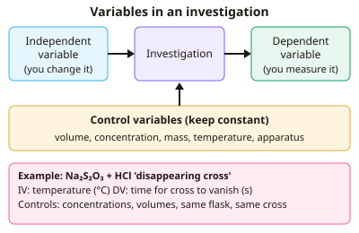

A-level Chemistry Year 12 · Topic 7
Practical skills in chemistry
Practical skills in chemistry are assessed both in the lab and in written papers, where planning, analysis and evaluation questions are common.
We will plan investigations, work safely with risk assessments, use apparatus accurately, and carry out basic techniques like filtration and heating to constant mass.
Then we calculate measurement uncertainty and percentage error, present and evaluate results, and use data loggers and research skills.
- 7 subtopics
- 325 questions
- Free: 7.1 notes and 10 questions
In this topic
- 7.1Planning investigations: variables, hypotheses and choosing apparatus and techniquesFree below · 39 questions
- 7.2Safe working: hazards, risk assessment and environmental and ethical considerationsOpen in Full Marks · 30 questions
- 7.3Using apparatus accurately: balances, burettes, pipettes, volumetric flasks, gas syringes and thermometersOpen in Full Marks · 74 questions
- 7.4Basic techniques: heating, filtration, drying and heating to constant massOpen in Full Marks · 74 questions
- 7.5Measurement uncertainty, percentage error and improving precisionOpen in Full Marks · 33 questions
- 7.6Recording, presenting and evaluating results: tables, graphs, anomalies and conclusionsOpen in Full Marks · 34 questions
- 7.7Using ICT and data loggers, researching and referencing sourcesOpen in Full Marks · 41 questions
7.1 · Free notes
Planning investigations: variables, hypotheses and choosing apparatus and techniques

Key points
- The independent variable is the one you deliberately change. The dependent variable is the one you measure. Control variables are kept constant so that the test is valid (fair).
- A hypothesis is a testable prediction with a scientific reason. For example: 'the rate increases with temperature because a greater proportion of molecules have energy ≥ the activation energy'.
- Choose apparatus for suitable range and resolution. A 25.0 cm³ pipette (about ±0.06 cm³) is much more accurate than a 25 cm³ measuring cylinder (about ±0.5 cm³) for a titration.
- Reading uncertainty is usually ± half the smallest division (or ± the last digit on a digital display). A burette is ±0.05 cm³ per reading, so a titre from two readings is ±0.10 cm³.
- Percentage uncertainty = (absolute uncertainty ÷ measured value) × 100. It is reduced by measuring larger quantities (e.g. a bigger temperature rise) or by using higher-resolution apparatus.
- Accuracy is closeness to the true value. Precision is closeness of repeat results to each other. Systematic errors shift all results the same way (e.g. an unzeroed balance). Random errors cause scatter and are reduced by repeating.
- Repeat measurements to spot anomalous results. For titrations, use concordant titres (within 0.10 cm³) and calculate the mean from those only.
- Collect at least five values of the independent variable over a wide, evenly spaced range. A pilot (preliminary) experiment helps decide quantities, ranges and timings.
- Match technique to purpose. Use titration for concentration. For rate, use gas collection, mass loss, a colorimeter or a clock reaction. Use calorimetry for ΔH. Use reflux, distillation, filtration, recrystallisation and melting point for preparing and purifying organic compounds. Use chromatography to separate mixtures.
- Plot the independent variable on the x-axis and the dependent variable on the y-axis, with units on the axis labels and a line or curve of best fit. The gradient of a tangent gives a rate, and the tangent at t = 0 gives the initial rate (e.g. cm³ s⁻¹).
- Practical skills are tested in written papers (planning, analysis, evaluation) and by teacher-assessed CPAC. This covers AQA required practicals, OCR practical activity groups (PAGs) and Edexcel core practicals.
In more detail
- Choosing apparatus by uncertainty: 25.0 cm³ pipette ±0.06 cm³; 50 cm³ burette ±0.05 cm³ per reading; 250 cm³ volumetric flask ±0.3 cm³; 100 cm³ measuring cylinder ±0.5 cm³.
- Worked hypothesis: 'The rate of reaction of magnesium with hydrochloric acid will double when the acid concentration doubles, because the frequency of collisions doubles.'
- Control variable example: in a temperature-dependence experiment on rate, keep concentrations and volumes constant and use the same mass and size of solid.
- Choosing a technique: concentration → titration; rate → gas collection, mass loss or colorimetry; ΔH → calorimetry; identity → tests or spectroscopy.
Practice
Planning investigations: variables, hypotheses and choosing apparatus and techniques: 10 questions
Pick an answer to check it, or open the answer for the explanation.
1. A student studies how temperature affects the time for a cross to disappear in the Na₂S₂O₃/HCl reaction. Which is the dependent variable?
- Volume of thiosulfate solution
- Temperature of the mixture
- Time for the cross to disappear
- Concentration of the acid
Show answer
C: Time for the cross to disappear. The dependent variable is what is measured in response to the change, here the time taken. Temperature is the independent variable and the others are control variables.
2. Which statement is the best testable hypothesis for the reaction of magnesium with hydrochloric acid?
- Investigate how concentration affects rate
- Rate rises with [HCl] because collisions are more frequent
- Hydrochloric acid is a strong acid
- Magnesium is more reactive than copper
Show answer
B: Rate rises with [HCl] because collisions are more frequent. A hypothesis is a testable prediction with a scientific reason. The other options are an aim or statements of fact that this experiment does not test.
3. A 25.0 cm³ pipette has an uncertainty of ±0.06 cm³. What is the percentage uncertainty in the volume delivered?
- 0.06%
- 0.24%
- 0.0024%
- 2.4%
Show answer
B: 0.24%. Percentage uncertainty = (0.06 ÷ 25.0) × 100 = 0.24%.
4. A titre of 24.30 cm³ is found from initial and final burette readings, each with uncertainty ±0.05 cm³. What is the percentage uncertainty in the titre?
- 0.10%
- 4.1%
- 0.41%
- 0.21%
Show answer
C: 0.41%. Two readings, each ±0.05, give ±0.10 cm³ on the titre. Then 0.10 ÷ 24.30 × 100 = 0.41%. Using only one reading's uncertainty gives 0.21%, which is wrong.
5. Why do chemists repeat measurements in an experiment?
- To remove any systematic error from the apparatus
- To prove that the hypothesis is correct
- To increase the resolution of the apparatus
- To spot anomalous results and obtain a more reliable mean
Show answer
D: To spot anomalous results and obtain a more reliable mean. Repeats reveal scatter (random error), identify anomalies and allow a mean. They cannot remove systematic errors, improve resolution or prove a hypothesis.
6. A 25 cm³ measuring cylinder reading 20.0 cm³ has an uncertainty of ±0.5 cm³. What is the percentage uncertainty in this volume?
- 2.5%
- 0.025%
- 1.0%
- 4.0%
Show answer
A: 2.5%. 0.5 ÷ 20.0 × 100 = 2.5%. This is much larger than for a pipette, so a cylinder is unsuitable where high accuracy is needed.
7. A thermometer has ±0.5 °C uncertainty per reading. Which change would reduce the percentage uncertainty in a measured temperature rise?
- Take the final reading sooner after mixing
- Use a thicker glass beaker as the container
- Make the temperature rise larger, e.g. more concentrated reagents
- Use a smaller mass of reactant
Show answer
C: Make the temperature rise larger, e.g. more concentrated reagents. Percentage uncertainty = uncertainty ÷ ΔT × 100. With the same thermometer, a larger ΔT gives a smaller percentage uncertainty.
8. Marble chips of different sizes react with hydrochloric acid to compare rates. Which variable must be kept constant?
- Concentration of the acid
- Particle size of the marble
- Rate of CO₂ production
- Surface area of the marble
Show answer
A: Concentration of the acid. Acid concentration (like volume of acid, mass of marble and temperature) is a control variable. Particle size or surface area is the independent variable, and rate is the dependent variable.
9. Titres (cm³) are 24.10, 23.35, 23.40 and 23.45. Concordant results are within 0.10 cm³. What mean titre should be used?
- 23.43 cm³
- 24.10 cm³
- 23.40 cm³
- 23.58 cm³
Show answer
C: 23.40 cm³. 24.10 is anomalous. The concordant titres 23.35, 23.40 and 23.45 average 23.40 cm³. Averaging all four gives 23.58 cm³, which is wrong.
10. Four titres are 22.40, 22.42, 22.41 and 22.40 cm³, but the true value is 23.00 cm³. Which description fits these results?
- Neither accurate nor precise
- Accurate but not precise
- Both accurate and precise
- Precise but not accurate
Show answer
D: Precise but not accurate. The results agree closely (precise) but all lie far from the true value (not accurate). This suggests a systematic error.
Keep going in Full Marks
Full Marks has 39 questions on Planning investigations: variables, hypotheses and choosing apparatus and techniques (29 more than here), set out in practice levels. You also get notes and 3D models for all 7 subtopics of Practical skills in chemistry, plus games, timed exams and past papers.